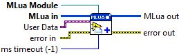

Connector Pane

Install Module
Adds a MLua module to the provided instance. The name of the module is retrieved using the "__name" command. If no name is provided the module becomes the new default module. In addition, the "__install" command is sent to the module allowing it the option to provide a Lua install script. This script is executed after the module has been added to the module list.
Parameter(s)
-----------------
- MLua in: Reference to the MLua instance.
- MLua Module: A LabVIEW VI reference to a MLua module which exposes LabVIEW code to Lua.
- User Data: User supplied data that will be made available each time the module is invoked from Lua.
- ms timeout (-1): The time to wait for the MLua reference to become available. A value of '-1' specifies an infinite timeout.
- error in: Describes error conditions that occur before this VI runs. This input provides standard error in functionality.
- MLua out: Reference to the MLua instance.
- error out: Contains error information. This output provides standard error out functionality.